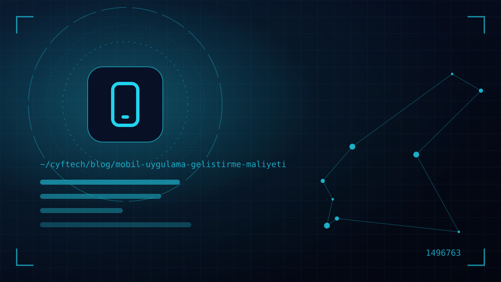

“Bir uygulama yaptırmak ne kadar tutar?” sorusu, “bir ev yaptırmak ne kadar tutar?” sorusuna benzer: cevap metrekareye, malzemeye ve kaç kat olacağına bağlıdır. Mobil uygulama geliştirme maliyeti de birkaç temel karardan doğar ve bu kararları önceden bilmek bütçenizi korur.
Bu yazıda bir mobil uygulamanın fiyatını oluşturan kalemleri tek tek açıyoruz: kapsam ve özellikler, iOS ve Android platform tercihi, arka uç (backend), tasarım, entegrasyonlar, test, mağaza ücretleri ve yayın sonrası bakım. Sonunda kabaca maliyet aralıklarını ve bütçeyi akıllıca kullanmak için önerilerimizi bulacaksınız.
Bir not: Aşağıdaki TL tutarları, 2026 Türkiye koşullarında yaklaşık ve yol gösterici aralıklardır; kesin fiyat ancak özellik listesi netleştiğinde verilebilir.
Maliyetin ana belirleyicisi: kapsam ve özellik listesi
Bir uygulamanın fiyatını en çok etkileyen şey, ekran sayısından çok iş kurallarının karmaşıklığıdır. Beş ekranlı bir uygulama, arkasında anlık senkronizasyon, ödeme ve rol bazlı yetkilendirme varsa, yirmi ekranlı basit bir katalog uygulamasından daha pahalı olabilir.
Bütçeyi büyüten tipik özellikler şunlardır:
- Kullanıcı hesabı ve roller: giriş, şifre sıfırlama, sosyal giriş, farklı yetkilere sahip kullanıcı tipleri.
- Ödeme: uygulama içi satın alma, abonelik veya sanal POS entegrasyonu.
- Anlık özellikler: mesajlaşma, canlı konum, anlık bildirim, çok cihaz arasında eşzamanlı veri.
- Donanım kullanımı: kamera, QR/barkod okuma, Bluetooth, NFC, arka planda konum.
- Çevrimdışı çalışma: internet yokken veri girip bağlantı gelince eşitlemek.
- Yönetim paneli: içeriği, kullanıcıları ve raporları yönetmek için web tabanlı bir panel.
Platform seçimi: iOS, Android veya ikisi birden
Türkiye’de mobil kullanıcıların yaklaşık dörtte üçü Android, dörtte biri iOS kullanıyor (Statcounter, 2026). Ancak kitlenize göre bu oran değişir; örneğin bazı premium hizmetlerde iOS kullanıcılarının payı ve harcama eğilimi daha yüksektir. Çoğu işletme için doğru cevap iki platformda birden yayında olmaktır.
Burada maliyeti belirleyen asıl karar teknolojidir:
| Yaklaşım | Maliyete etkisi | Ne zaman mantıklı? |
|---|---|---|
| Native (Swift + Kotlin) | İki ayrı kod tabanı; en yüksek maliyet | Yoğun donanım kullanımı, en üst düzey performans |
| Cross-platform (Flutter, React Native) | Tek kod tabanı; genellikle belirgin tasarruf | İş uygulamaları, e-ticaret, rezervasyon, çoğu KOBİ projesi |
| PWA (web tabanlı uygulama) | En düşük maliyet; mağaza ve bazı cihaz özellikleri kısıtlı | Basit, içerik ağırlıklı ihtiyaçlar |
Bu kararın ayrıntılarını native mi cross-platform mu yazımızda karşılaştırdık.
Görünmeyen maliyet: backend, API ve yönetim paneli
Uygulama müşterilerin gördüğü yüzdür; asıl iş çoğu zaman arka planda döner. Kullanıcı verilerini saklayan veritabanı, uygulamayla konuşan API, bildirim altyapısı ve işletmenin kullanacağı yönetim paneli, toplam bütçenin önemli bir kısmını oluşturabilir.
Burada iki yol vardır:
- Hazır servisler (BaaS): Firebase gibi platformlar kimlik doğrulama, veritabanı ve bildirim gibi hazır yapı taşları sunar. Başlangıçta hızlı ve ucuzdur, ancak kullanıcı sayısı arttıkça aylık maliyet yükselebilir ve verilerin yurt dışında işlenmesi KVKK açısından ayrıca değerlendirilmelidir.
- Özel backend: İş kurallarınıza özel, kendi sunucunuzda çalışan bir altyapı. İlk yatırım daha yüksektir; ancak kontrol, ölçeklenme ve mevcut sistemlerinizle (ERP, muhasebe, CRM) entegrasyon kolaylaşır.
Mevcut bir web siteniz veya yazılımınız varsa, aynı backend’i hem web hem mobil için kullanmak toplam maliyeti düşürür. Kendi ürünümüz KATSİS’te web paneli, iOS / Android ve Windows uygulamaları aynı altyapıyı paylaşır; bu sayede bir özellik bir kez yazılıp her yerde kullanılabilir. Ayrıntılar projelerimiz sayfasında.
UI/UX tasarımı, test ve kalite güvencesi
İyi bir mobil uygulama tasarımı yalnızca güzel ekranlar değildir: kullanıcı akışları, boş durumlar, hata mesajları, farklı ekran boyutları ve erişilebilirlik de tasarımın parçasıdır. Hazır bir arayüz kiti kullanmak maliyeti düşürür; markaya özel animasyonlu bir tasarım ise artırır.
Test kalemi çoğu teklifte göz ardı edilir, oysa uygulamanın mağazada düşük puan alıp almayacağını belirler. Farklı Android üreticileri, eski iOS sürümleri, zayıf internet bağlantısı ve yarıda kalan ödeme senaryoları test edilmelidir. Teklif alırken test sürecinin nasıl yürütüleceğini ve kaç cihazda deneneceğini mutlaka sorun.
Fiyatın içinde kimin emeği var?
Bir mobil uygulama projesinde genellikle bir proje yöneticisi, bir UI/UX tasarımcısı, bir veya iki mobil geliştirici, bir backend geliştirici ve test uzmanı çalışır. Teklifteki rakam, kabaca bu ekibin projeye ayıracağı toplam saatin karşılığıdır. Bu yüzden “şu uygulamanın aynısı” istemek tek başına fiyat vermeye yetmez; asıl soru, o uygulamanın hangi parçalarının sizin için gerçekten gerekli olduğudur. Freelancer ile çalışmak saat ücretini düşürebilir, ancak tasarım, backend ve test gibi uzmanlıkların tek kişide toplanması proje riskini artırır.
En pahalı uygulama, yayına çıktıktan sonra baştan yazılmak zorunda kalan uygulamadır.
App Store ve Google Play ücretleri ve komisyonlar
Geliştirme maliyetinin dışında, uygulamayı mağazalarda yayınlamanın da resmi ücretleri vardır:
- Apple Developer Program: üyelik yılı başına 99 ABD doları (bölgeye göre yerel para biriminde gösterilir). Şirket adına hesap açmak için D-U-N-S numarası gerekir.
- Google Play Console: tek seferlik 25 ABD doları kayıt ücreti. 13 Kasım 2023’ten sonra açılan kişisel geliştirici hesaplarında, yayına almadan önce en az 12 test kullanıcısıyla 14 gün kesintisiz kapalı test yapma şartı vardır; kurumsal hesap açmak bu adımı ortadan kaldırır.
- Komisyonlar: Uygulama içinde dijital içerik veya abonelik satıyorsanız mağazalar komisyon alır. Apple’ın Small Business Program’ı ve Google Play, yıllık 1 milyon doların altındaki gelirlerde %15 oranı uygular; üzerindeki gelirde standart oran %30’dur. Fiziksel ürün ve hizmet satışlarında (örneğin e-ticaret, yemek siparişi) bu komisyon uygulanmaz.
Yayın sonrası: bakım, sunucu ve güncelleme maliyeti
Uygulama yayına çıktığında bütçe bitmez. Apple ve Google her yıl yeni işletim sistemi sürümleri çıkarır, mağaza kuralları ve minimum SDK gereksinimleri değişir. Güncellenmeyen bir uygulama birkaç yıl içinde çökmeye başlayabilir ya da mağazadan kaldırılabilir.
Yıllık bütçede şu kalemleri planlayın:
- Sunucu ve servisler: hosting, veritabanı, bildirim, SMS ve e-posta servisleri, harita API’leri.
- Teknik bakım: işletim sistemi uyumluluğu, kütüphane güncellemeleri, güvenlik yamaları, hata düzeltmeleri.
- Yeni özellikler: kullanıcı geri bildirimine göre geliştirmeler.
- Mağaza yenilemeleri: Apple’ın yıllık üyelik ücreti.
Sektörde yaygın bir pratik kural, yıllık bakım için ilk geliştirme bedelinin yaklaşık %15–20’si kadar bütçe ayırmaktır. Bu oran uygulamanın karmaşıklığına ve ne kadar hızlı yeni özellik eklemek istediğinize göre değişir.
Mobil uygulama fiyatları: 2026 için yaklaşık aralıklar
Aşağıdaki aralıklar, iki platformda cross-platform geliştirme, temel bir yönetim paneli ve yayın desteği varsayımıyla verilmiştir. Yaklaşık, 2026 itibarıyla Türkiye koşullarına göredir ve ekibin deneyimi, tasarım düzeyi ve entegrasyonlara göre değişir.
| Uygulama tipi | Örnek | Yaklaşık bütçe | Süre |
|---|---|---|---|
| Basit / MVP | Katalog, randevu talebi, bilgi uygulaması | 250 bin – 600 bin TL | 2–3 ay |
| Orta | Üyelik, ödeme, bildirim, panel ve raporlar | 600 bin – 1,5 milyon TL | 3–6 ay |
| Karmaşık | Anlık senkron, çok rollü yapı, ERP entegrasyonu, pazaryeri | 1,5 milyon TL ve üzeri | 6 ay ve üzeri |
Çok düşük teklifler genellikle hazır şablonların az değiştirilmiş hâlidir; backend, test ve kaynak kod teslimi gibi kalemler teklifte yer almıyor olabilir. Teklifleri karşılaştırırken toplam rakamdan çok kapsamın aynı olup olmadığına bakın. Web sitesi bütçesi için de benzer bir döküm arıyorsanız web sitesi fiyatları yazımıza göz atabilirsiniz.
Mobil uygulama maliyetini düşürmenin 6 akıllı yolu
Maliyeti düşürmek, kaliteden ödün vermek anlamına gelmek zorunda değil. Bütçenin büyük kısmı belirsizlikten ve sonradan değişen kararlardan kaybolur. Projelerde gördüğümüz en etkili tasarruf yöntemleri şunlar:
- 1. MVP ile başlayın: Uygulamanın tek bir ana işi en iyi şekilde yapmasını sağlayın. Gerçek kullanıcı verisi gelmeden yapılan özelliklerin önemli bir kısmı hiç kullanılmaz.
- 2. Tek kod tabanı tercih edin: Ürününüz yoğun donanım kullanımı gerektirmiyorsa cross-platform geliştirme iki platformu tek ekiple çıkarmanızı sağlar.
- 3. Mevcut altyapıyı yeniden kullanın: Web sitenizin veya iç yazılımınızın API’si varsa, mobil uygulamayı aynı altyapıya bağlamak sıfırdan backend yazmaktan çok daha ucuzdur.
- 4. Kapsamı yazılı hâle getirin: Ekran listesi, kullanıcı rolleri ve örnek akışlar içeren birkaç sayfalık bir doküman, hem teklifleri karşılaştırılabilir kılar hem de proje ortasındaki “bu da olsun” taleplerini azaltır.
- 5. Hazır servisleri akıllıca seçin: Harita, ödeme, SMS ve bildirim gibi işler için olgun servisler kullanmak geliştirme süresini kısaltır; ancak kullanıcı sayısı arttığında oluşacak aylık maliyeti de baştan hesaplayın.
- 6. Aşamalı ödeme ve teslim planı yapın: Tasarım, ilk test sürümü, mağaza yayını gibi kilometre taşlarına bağlı ödemeler, ilerlemeyi görmenizi ve gerektiğinde yön değiştirmenizi kolaylaştırır.
Son olarak, teklifte kaynak kodun ve fikri hakların kime ait olacağını mutlaka yazdırın. Kaynak kodu size teslim edilmeyen bir uygulama, ileride başka bir ekiple geliştirmek istediğinizde sıfırdan yazılmak zorunda kalabilir ve bu, bütçenin en büyük gizli riskidir.
- Özellikler “olmazsa olmaz / sonra” diye ayrıldı mı?
- Hedef platformlar ve teknoloji (native / cross-platform) belli mi?
- Backend ve yönetim paneli teklife dahil mi?
- Test süreci ve kapsamı yazılı mı?
- Geliştirici hesapları şirket adına mı açılacak?
- Kaynak kod ve fikri haklar kime ait olacak?
- Yayın sonrası bakım ve sunucu maliyetleri planlandı mı?
Sık sorulan sorular
Bir mobil uygulama yaptırmak ne kadar sürer?
Basit bir MVP genellikle 2–3 ayda, ödeme ve panel içeren orta ölçekli bir uygulama 3–6 ayda tamamlanır. Karmaşık entegrasyonlar ve çok rollü yapılar bu süreyi uzatır. İçeriklerin ve onay süreçlerinin zamanında ilerlemesi de takvimi doğrudan etkiler.
App Store ve Google Play’de uygulama yayınlamak ücretli mi?
Evet. Apple Developer Program üyelik yılı başına 99 ABD dolarıdır. Google Play Console için ise tek seferlik 25 ABD doları kayıt ücreti ödenir. Uygulama içinde dijital içerik satışı varsa ayrıca komisyon uygulanır.
Hem iOS hem Android uygulama yaptırmak iki kat mı pahalı?
Native geliştirmede iki ayrı kod tabanı yazıldığı için maliyet ikiye yaklaşabilir. Flutter veya React Native gibi cross-platform teknolojilerde tek kod tabanı kullanıldığından, iki platform genellikle tek platformun iki katından belirgin şekilde daha düşük maliyetle çıkar.
Uygulamanın yıllık bakım maliyeti ne kadardır?
Sektörde yaygın pratik kural, ilk geliştirme bedelinin yaklaşık yüzde 15–20’sinin yıllık bakım ve küçük geliştirmeler için ayrılmasıdır. Buna sunucu, SMS ve bildirim gibi servislerin aylık ücretleri ile Apple’ın yıllık üyelik bedeli eklenir.
Ücretsiz uygulama yapma araçları işe yarar mı?
Kodsuz araçlar fikir doğrulamak veya basit iç kullanım uygulamaları için işe yarayabilir. Ancak özel iş kuralları, entegrasyonlar, performans ve ölçeklenme gerektiğinde sınırlara hızla ulaşılır ve platforma bağımlılık oluşur.
Son söz
Mobil uygulama geliştirme maliyeti tek bir rakam değil, verdiğiniz kararların toplamıdır: neyi ilk sürüme alacağınız, hangi teknolojiyi seçeceğiniz, backend’i nasıl kuracağınız ve yayından sonra uygulamaya nasıl bakacağınız. Bu kararları baştan netleştirmek, hem bütçe sürprizlerini önler hem de uygulamanın gerçekten kullanılmasını sağlar. CYF Tech olarak iOS ve Android için mobil uygulama geliştirme hizmetimizde önce kapsamı sizinle birlikte netleştiriyor, ardından şeffaf bir teklif sunuyoruz. Fikrinizi konuşmak için bize yazın.